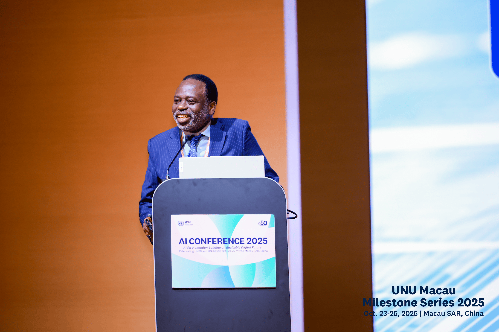
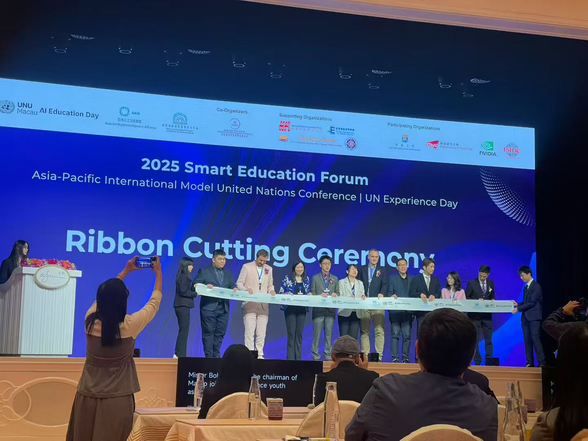
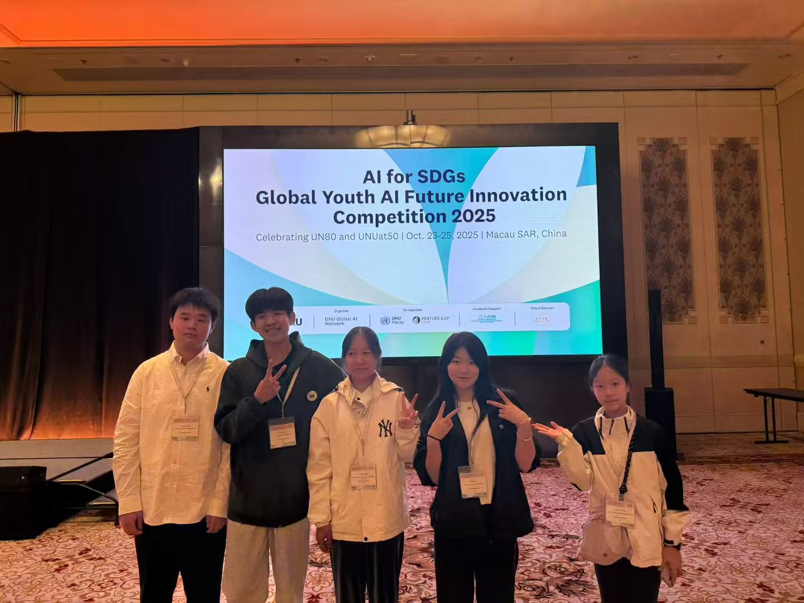
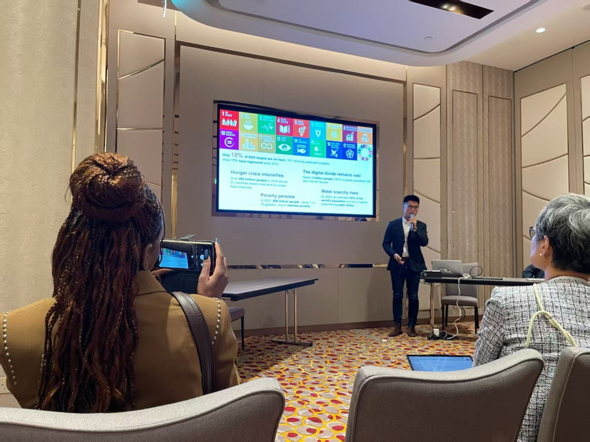
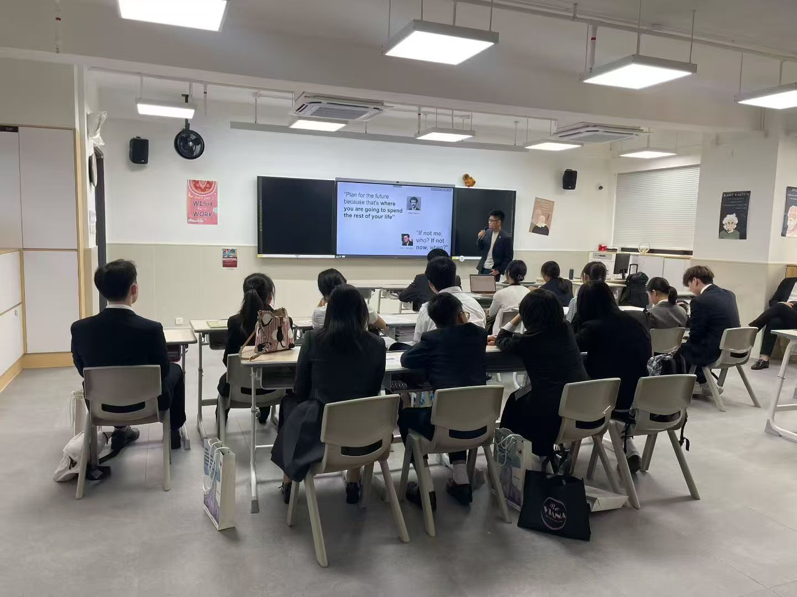
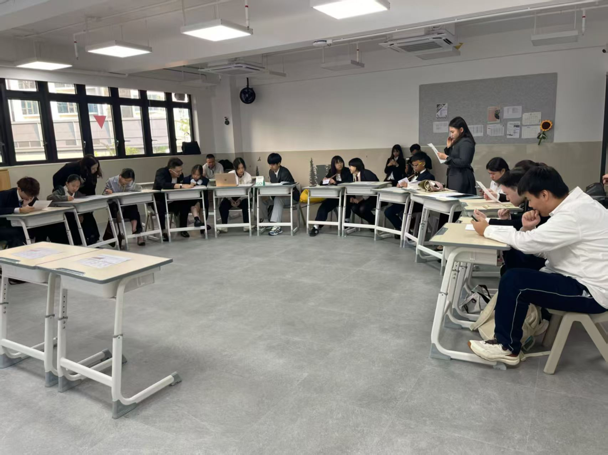

GYDA Organizes Exclusive Youth Program in "AI for Humanity" Summit

Location
Macau, China
Date
October 23–26, 2025
Macau — October 23–26, 2025 — The Global Youth Development Alliance (GYDA) organized Exclusive Youth Program in “AI for Humanity” Youth Summit at the United Nations University (UNU) Macau Campus—a four-day program that helped high-school and university students connect Artificial Intelligence (AI) to the United Nations Sustainable Development Goals (SDGs).
As the youth segment of the UNU Macau summit, GYDA designed and facilitated an immersive journey combining academic insight, global dialogue, hands-on practice, and cultural fieldwork—empowering young people to translate AI knowledge into real-world social impact.
Part 1 — Main Conference: AI Empowering Humanity’s Shared Future

The opening sessions featured keynote addresses by senior UN leaders, including a video message from the UN Secretary-General and remarks by the UNU Rector, setting the tone for “AI Empowering Humanity’s Shared Future.” Curated by GYDA, youth delegates engaged in parallel forums on AI & Inclusive Education, Youth Tech for Climate Action, and Global South Cooperation, exploring equitable access, digital literacy, and ethics in AI.
Throughout the main conference, GYDA facilitated youth dialogues to surface perspectives on AI governance, responsible innovation, and human-centered design, ensuring that young voices informed conversations aligned with the 2030 Agenda.
Part 2 — Global Youth AI Innovation Competition
A centerpiece of the program was the Global Youth AI Innovation Competition Final, where 12 teams presented solutions under the theme “Ecological Sustainability & Green Transition.” Projects addressed climate action, clean energy, and sustainable cities—demonstrating practical pathways for AI to advance SDGs.

Guided by GYDA mentors, students developed prototypes such as AI-based waste sorting, renewable energy optimization, and urban heat analytics for resilience. Judges from UN agencies, academia, and industry recognized “Best Innovation” and “Most Feasible Solution,” with winning teams receiving incubation support to continue implementation.
Part 3 — Workshops & Youth Empowerment
To turn ideas into capability, GYDA co-led hands-on AI Makers Workshops with technical partners. Students learned to apply foundational AI tools, visualize sustainability data, and design pilot solutions for local challenges—while addressing data ethics, bias mitigation, and inclusive UI/UX.

A Model UN AI Policy Negotiation simulated multilateral decision-making on a Global AI Ethics Framework, sharpening participants’ policy literacy and diplomacy skills. Beyond classrooms, the Cultural SDG Challenge took students into Macau’s historic districts to document cases of sustainable urban development—from low-carbon transport to heritage preservation—linking technology, culture, and community benefit.


Outcomes & Next Steps
- Youth earned UNU Certificates and digital skill badges in AI & SDGs practice.
- Top projects gained incubation pathways and access to a global youth innovation network.
- Participants strengthened ethical AI skills, cross-cultural collaboration, and impact-oriented problem-solving.
By organizing this program in Macau, GYDA helped young people build the competencies, confidence, and conscience to apply AI for social good—laying foundations for sustained youth leadership in ethical technology and sustainable development.